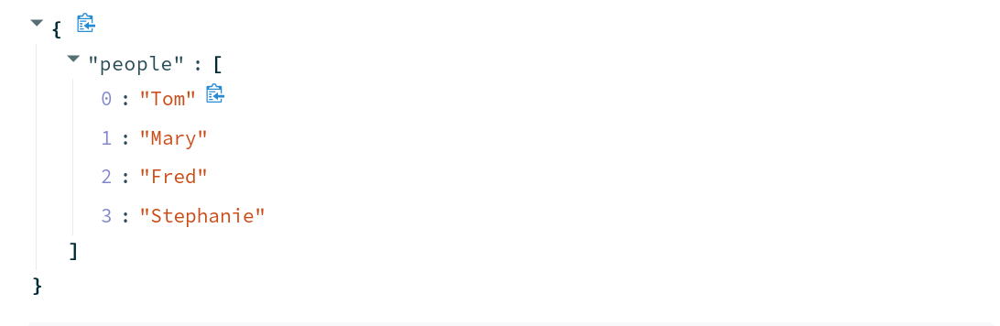
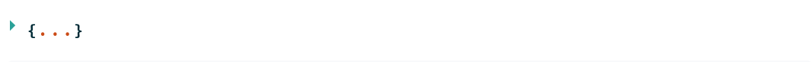
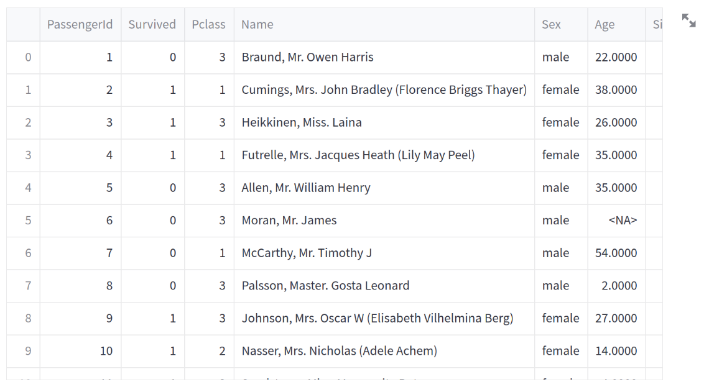

Displaying Data in Streamlit
Contents
1.2. Displaying Data in Streamlit#
Streamlit offers numerous ways to display different types of data. In this section, we will be looking at a few of those methods from raw text, to structured markdown, to Pandas DataFrames, and even images.
1.2.1. Displaying Text to Users#
Once you have imported streamlit, you can use the Streamlit library to create an application with just a few lines of code. To follow along in the repository, you can view the 01-Displaying Data.py file or the Displaying Data page of the application.
Streamlit offers a number of ways to display information to the users of your application. One of the most common things we must convey to a user is text. This can be a title, it can explain basic information about the application, or it can be to display results from some prompt. Streamlit offers several ways to display information to users.
1.2.1.1. st.title#
Every application needs a name. If you want the title of your application to stand out on the page, you can use st.title() to output a title on your application page. This will take one argument, a string which will be your application title. It is entirely optional to have a title. To add the title, you would place the following line into your Python file.
st.title("This a Title.")
Once you have added this to your Python file, you can hit refresh in your Streamlit application, and you should see a title page now appear at the top of your page.
1.2.1.2. st.header#
Now that we have a title, we can add some extra layers to our application, rather like a traditional HTML website. We can add headers, for example, with st.header(). Again, this will take a single argument, the text that you wish to display as a header. You can add a header to your application by adding the following line to the same Python file and hitting refresh:
st.header("This a Header.")
Notice that our header appears below our title. This is because Streamlit reads the Python file top-to-bottom as it reruns in the background. If you want an item to appear higher in the application, you must place it earlier in your Python file. Additionally, you can use containers which we will meet later in this chapter.
1.2.1.3. st.subheader#
Just like st.header, st.subheader adds a subheading to your application to allow you to have even greater nested structure. If you add the following line to your Python file and hit refresh, you will see a subheading appear.
st.subheader("This a Subheader.")
1.2.1.4. st.write#
The most common way to display text to a user is with st.write(). With this command, we can pass a single argument, some sort of data that we want to display. Let’s use this command and display the string This is text.. To do this, we would add the following line to our Python file:
st.write("This is text.")
Streamlit’s st.writeis quite powerful. As we will see below, it can display data structures, such as lists and dictionaries, as well as entire dataframes, automatically.
1.2.1.5. st.caption#
In Streamlit, it may be necessary to caption something. As we will see, images can be captioned separately. To caption something in your application, you will usest.caption(). Again, this will take a single argument, the string that we wish to display as a caption. We can add a caption to our application by adding the following line to our Python file:
st.caption("This a Caption.")
1.2.1.6. st.markdown#
Finally, we have st.markdown. Markdown is a type of language that allows you to structure text quickly. Markdown is easy-to-read for both humans and machines and is the standard language used for README pages. Markdown files end with a .md extension.
Streamlit allows users to leverage the power of markdown inside a Streamlit application. This means that we can read in a markdown file stored in the same directory as our application and automatically display that file’s contents in our application. This is really useful when you have pages or sections on a page that require longer section of text or, perhaps, things like lists. These types of long strings can often crowd a Python file. In our demonstration Streamlit application, for example, we can see this in action with the following lines added to our Python file.
with open("./markdown/sample.md", "r") as f:
markdown_text = f.read()
st.markdown(markdown_text)
As we will learn later in this book, st.markdown can also be used to display HTML which makes it even more powerful.
1.2.2. Displaying Python Data Structures#
It is often necessary to display raw data inside an application either during the development phase of the application or in production (when users will engage with the app). Streamlit has two different ways to display data with the same results: st.write() or st.json(). On the surface, they both do the same thing, but st.json allows you to set an expanded keyword argument to Trueor False. This allows you to control if the data appears in its entirety in the application or as a expandable option within the application.
1.2.2.1. Data Structures with st.write()#
Let’s first test this out with st.write(). We can use the following two lines to create a dictionary called names and then st.write() to display that data.
names = {"people": ["Tom", "Mary", "Fred", "Stephanie"]}
st.write(names)
The output will look like this in your application:

1.2.2.2. Data Structures with st.json()#
For our second option, we can use st.json, but note that we are able to specify expanded here as a keyword argument.
names = {"people": ["Tom", "Mary", "Fred", "Stephanie"]}
st.json(names, expanded=False)
The output will look like this in your application:

1.2.3. Displaying Tabular Data#
There are four ways to display tabular data within Streamlit.
st.write() (defaults to st.dataframe())
st.dataframe()
st.table()
st.markdown()
While on the surface, these may all seem to display the same data, understanding what each does is important so that you can have your application do precisely what you wish.
1.2.3.1. Tabular Data with st.write()#
If you are trying to test an application quickly and just want to display tabular data without any extra customization, then st.write() is perfectly suitable. If Streamlit detects a Pandas DataFrame as the object that is being passed to st.write(), it will automatically output that data via st.dataframe().
st.write(df)
1.2.3.2. Tabular Data with st.dataframe()#
If you want to have more control over how your tabular data is displayed in your application, you may want to use st.dataframe instead. By using st.dataframe, you can control the width and height of the displayed dataframe.
st.dataframe(df, height=750)
The output will look like this in your application:

With both st.write() and st.dataframe, users will be given a Streamlit dataframe display. This means that they can highlight certain parts of the dataframe, expand cells to read longer text, and sort the data. In other words, the dataframe is an entirely interactive display widget.
1.2.3.3. Tabular Data with st.table()#
One of the downsides the st.dataframe display is that the interactivity comes at the cost of aesthetics. If you are working with humanities data, you may have a lot of text in your tables. That text can be difficult for viewers to read in the standard st.dataframe output. In these situations, st.table may be more appropriate.
st.table(df)
1.2.3.4. Tabular Data with st.markdown()#
A key limitation of both the st.table() and st.dataframe is that they do not offer a way to display images. With markdown, we can easily display images within our tables. This, however, comes at the cost of not being able to sort the output. We will learn how to do this later when we work with custom HTML in our Streamlit application. For now, understand that you can convert a Pandas DataFrame to markdown by using the to_markdown() method.
st.markdown(df.to_markdown())
1.2.4. Displaying Multimedia in Streamlit#
Streamlit also offers the ability to easily add multimedia into your application. For all three types of media (images, audio, and video), Streamlit allows you to place the media in the app in four ways:
file path
from a url
from a NumPy Array
from bytes
Each of these has its own uses. If the media you have is available locally within the app (such as logos and design elements), from file path usually makes the most sense. If your data sits on a server on the Web, then url is the right choice. These will be images that do not sit within the code of your application or in the local directory. When you have a user input media data into the app (via file upload), you will want to load the data via NumPy Array or Bytes. We will see these last two in action during the final chapter of this section when we apply Streamlit to develop real digital humanities applications.
1.2.4.1. Images#
If we are working with images, we can load a local image with the following line:
st.image(path_to_image)
1.2.4.2. Audio#
For audio, we would use the following line
st.audio(path_to_image)
1.2.4.3. Video#
For video we would use the following line:
st.video(path_to_image)